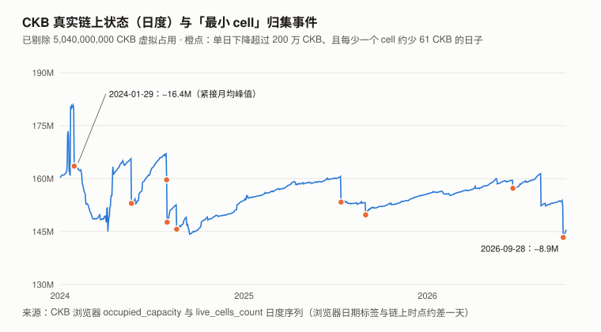
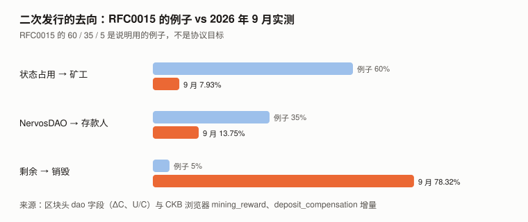
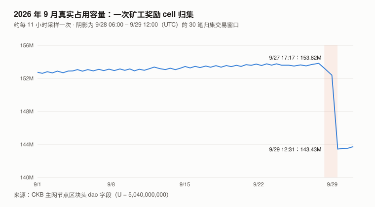

CKB / Nervos 完整调研与分析报告
版本：2026 年 9 月（兼 Q3 回顾）
完成日期：2026-10-06
本系列第十二个资产的第二期本版更新要点：
- 9 月真实链上状态单月 −5.89%（152,741,969 → 143,732,036 CKB），其中 99.8% 来自同一个出块奖励地址的净变化。
用 indexer 拉出该地址（0xeb0c…e7d6）9 月全部进出记录：新增 182,060 个 cell、消耗 329,446 个，净 −147,386 个 × 61 CKB = −8,990,546 CKB；全链真实状态同期 −9,009,933。
消耗的主体是 9/28–29 的一次大归集（30 笔交易、178,945 个输入，随机抽查 300 个全部是该地址的出块奖励 cell），归集掉的是此前数月积压的奖励 cell。
四个最大出块奖励地址合计净变化约 −910 万 CKB，全链其余部分 9 月约 +9.5 万、基本持平——这个月的「状态塌方」是同一个出块奖励地址在整理挖矿收入，不是使用量下降。- 8 月版的「税基见顶」叙事，在可比口径下无法判定。 2024 年以来真实状态有 9 次「每少一个 cell 约少 61 CKB」的大跌，本期逐笔核实了其中 2 次，都是出块奖励 cell 归集。
再用 indexer 倒推奖励地址的逐日持有量：8 月版月均峰值所在的 2024-01，一个奖励地址（0xdde7801c…）就持有至少 1,449 万 CKB 的奖励 cell；扣掉后 1 月月均最多约 1.524 亿，
而 2026 年 6、7 月扣掉当期最大的奖励地址后是 1.525 亿、1.516 亿——两者几乎相同。「31 个月未创新高」既证实不了也推翻不了。
8 月版核心论点 C8-1 本期判 ⊘：理由是构念效度——这条序列的月度变化可以被一个地址的日常记账主导。- 同一个奖励地址的出块份额：6 月 37.2%、7 月 54.5%（抽样）→ 8 月 ≤ 57.6%、9 月 ≤ 64.7%（按该地址收到的奖励 cell 数普查）。
8、9 月都过半且仍在上升；7 月抽样的 95% 区间 45.7%–63.1%，不能确认过半。同期全网算力月均从一年前约 245 PH/s 降到 70–90 PH/s。
一个地址不等于一个实体（可能是矿池），但这是 8 月版完全没有测过的安全议题。- 8 月版欠下的「成本基准法」本期做了。 枚举约 100 万个活跃 cell，按区块桶近似每个 cell 最后一次移动当日的价格：
已实现价格（均值）$0.00526，按容量的中位成本 $0.00159；9/30 市价 $0.001317 是前者的 0.25 倍、后者的 0.83 倍。
两种统计量都显示市价低于全网成本，但只有一个时点、没有历史序列给区间定标，换算不成目标价——「不给目标价」从「未尝试」推进到「尝试了，卡在定标」。- 9 月 +27.49%（BTC +6.42%），比 beta 预期多 19.6 个百分点。 同口径下其余 8 个山寨资产的 9 月超额中位数是 10.9 个百分点：
约 10.9pp 属板块普涨，约 8.7pp 是 CKB 自身的部分——大约补回了 7 月自身落后（−17.3pp）的一半。 Q3 相对对照组仍落后约 8.4pp。
本报告不给目标价。 理由与成本基准法的尝试见第 10 章。
利益冲突声明：作者未持有 CKB，与 Nervos 基金会、Cryptape 及任何 CKB 生态项目无雇佣、
顾问或投资关系。本报告的链上数据全部由作者从 CKB 主网节点与 GitHub 一手仓库直接抓取。
核心结论摘要（一页速览）
| 维度 | 观测 | 判断 |
|---|---|---|
| 价格（9/30） | $0.001317，9 月 +27.49%（BTC +6.42%）；Q3 +51.21%（BTC +42.64%）；beta 1.226、R² 0.469 | 9 月超出 beta 预期 19.6pp，与 7、8 月的 −19.4pp 几乎抵消；Q3 残差 −1.1pp |
| 真实链上状态 | 9/01 152,741,969 → 10/01 143,732,036（−5.89%） | ≈ 全部来自一个出块奖励地址的净变化（−8,990,546 CKB）；四个最大奖励地址之外约 +9.5 万，基本持平 |
| 8 月版「税基见顶」 | 2024-01 峰值月里一个奖励地址至少持有 1,449 万 CKB 奖励 cell；扣掉后 ≤ 1.524 亿，2026-06/07 扣掉后 1.525 / 1.516 亿 | 可比口径下无法判定；C8-1 判 ⊘ |
| 出块集中度 | 同一奖励地址 37.2% → 54.5%（抽样）→ ≤ 57.6% → ≤ 64.7%（普查）（6–9 月） | 8、9 月过半且仍在上升；地址 ≠ 实体，未识别其身份 |
| 全网算力 | 10/01 79.8 PH/s（一年前月均约 245 PH/s） | 集中度上升与算力下降同时发生 |
| 成本基准法 | 已实现价格（均值）$0.00526；中位成本 $0.00159；按容量 41% 浮盈 / 59% 浮亏 | 两者都高于市价；无历史序列定标，不能换算成目标价 |
| 二次发行去向 | 矿工 7.93% / DAO 13.75% / 销毁 78.32% | 与 8 月（7.97 / 13.97 / 78.06）几乎相同 |
| 流通量增速 | 9 月 +0.3789%（月初分母），复利年化 4.71% | 8 月 4.69% |
| NervosDAO | 10/06 合计 90.41 亿（流通量 18.21%），其中 9.21 亿在退出队列 | 9 月存款中部分净流出 1.92 亿，是 8 月的 3.44 倍 |
| 手续费 | 9 月合计 1,121.93 CKB = $1.34 | 占矿工收入 0.00062% |
| 安全预算 | 日均 $7,198，年化占市值 4.02% | |
| Fiber | FundingLock 38 个 cell、43,889 CKB（10/06） | 9/09 为 34 个、39,691 CKB |
| 本报告给目标价 | 否 | 见第 10 章 |
一句话：8 月版把真实链上状态当作 CKB 的需求锚；9 月这个锚的月度变化几乎全部是同一个出块奖励地址在记账——
而这个地址从 8 月起已经拿下全网一半以上的区块。
1. CKB 是什么
协议层面与 8 月版相同，不再重复。三个要点：
| 内容 | |
|---|---|
| 代币用途 | 占用状态空间的凭证：存 1 字节状态要持有并锁定 1 CKB；最小 cell 61 字节，即至少 61 CKB |
| 发行 | 一次发行 336 亿封顶、约 4 年减半，全给矿工；二次发行恒定 13.44 亿 CKB / 年，按 RFC0015 分给矿工、NervosDAO 存款人与国库（目前即销毁） |
| 一手数据源 | 区块头 32 字节 dao 字段：C（累计发行）/ AR（累计利率）/ S（DAO 与国库池）/ U（占用容量），字节序 c, ar, s, u |
本期用到的一条协议事实（Codex 审查时对照 CKB 源码确认）：非创世区块的 cellbase 输出由共识要求无 type、data 为空；
奖励锁为 secp256k1（args 20 字节）时，每个奖励 cell 占 8 + 32 + 1 + 20 = 61 字节。奖励在出块约 11 个区块后发放，成熟期 4 个 epoch（约 16 小时）。
1.1 本期补：「中本聪礼物」那枚 cell 的来历（8 月版下期清单第三优先）
8 月版发现 dao 字段的 U 有 97% 来自创世那枚 84 亿 CKB cell 的「虚拟占用」（按 SATOSHI_CELL_OCCUPIED_RATIO = 6/10 计 50.4 亿），
但没找到设计记录。本期找到了原始 PR：
| 来源 | 内容 |
|---|---|
nervosnetwork/ckb PR #1576（2019-09-10 创建，2019-09-16 合并） |
「主网上线时这个 cell 发行创世容量的 1/4，其中 60% 的容量按已占用计算，这会影响 Nervos DAO 合约的利息」 |
| 同一 PR 的前身 PR #1491（2019-08-27，未合并） | 「virtual occupied 会计入区块头 dao 字段的已用容量」，目的是「不必真的写入那么多字节」 |
这解开了一半：设计意图有了一手记录——60% 的虚拟占用是有意用来影响 NervosDAO 利息分配的，
与 8 月版 5.2.1 的重构方向一致。但 PR 里没有解释为什么是 0.6。
⚠️ 一处与 8 月版的表述需要对齐：PR #1576 写「中本聪可以用私钥签名花费这个 cell」。
而主网创世块第 6 个输出（8,400,000,000 CKB）的锁脚本code_hash是 32 字节全零、hash_type = data——
没有任何程序的哈希会恰好是全零，因此它实际上不可花费（本期get_live_cell确认仍是活跃 cell）。
8 月版「永久不可花费」的结论成立，但它是由锁脚本推出来的，不是协议的明文规定；PR 说明里的设想没有落实到主网配置。
2. CKB 的发展阶段划分
阶段一到四与 8 月版相同（创世 2019-11 / 状态积累 2020–2023-09 / 首次减半 2023-11-19 / RGB++ 叙事 2024–2025）。
本期要修订的是阶段五的读法。
阶段五：状态见顶与 RGB++ 退潮（2024-01 – 至今）——本期修订
月均序列本身没有错（本期复读一致，并补上 9 月）：
| 月份（月均，CKB 浏览器口径） | 真实占用容量 |
|---|---|
| 2024-01 | 166,852,970 ← 月均峰值 |
| 2025-08 | 152,958,239 |
| 2026-06 | 158,630,597 |
| 2026-07 | 159,019,263 |
| 2026-08 | 156,235,117 |
| 2026-09 | 152,282,221 |
| 2026-10（1–4 日，不完整） | 144,942,792 |
要修订的是「这个序列测的是什么」。 第 5 章证明：这条序列里混着出块奖励 cell 的积攒与归集。
本期用 indexer 拉出奖励地址的全部进出记录，倒推它们每天日末持有多少奖励 cell（每个 61 CKB），两侧都扣：
| 月份 | 浏览器月均（8 月版口径） | 当期最大奖励地址持有的奖励 cell（月均） | 扣掉后 |
|---|---|---|---|
| 2024-01（8 月版的「峰值」） | 166,852,970 | 0xdde7801c… ≥ 14,488,793 |
≤ 1.524 亿 |
| 2026-06 | 158,630,597 | 0xeb0c… 6,147,773 |
1.525 亿 |
| 2026-07 | 159,019,263 | 0xeb0c… 7,417,443 |
1.516 亿 |
| 2026-08 | 156,235,117 | 0xeb0c… 8,789,024 |
1.474 亿 |
| 2026-09 | 152,282,221 | 0xeb0c… 9,484,613 |
1.428 亿 |
2024 侧是下限扣法：以 1/30 归集完成后持有量为 0 倒推，真实持有只会更多；
0xdde7801c…在 2023-12-01 就已持有至少 163,597 个奖励 cell，1/29 增至约 26 万个，1/30 一次归集清零。
2026 侧以 10/06 的实际持有量为锚倒推。另有0x8805…一个奖励地址长期持有约 18.5 万个奖励 cell（约 1,130 万 CKB）且从不归集——2024 年有没有同类地址，本期没有测。

图中数字：纵轴刻度 130M / 145M / 160M / 175M / 190M（百万 CKB）；横轴 2024 / 2025 / 2026；
标注 2024-01-29 −16.4M（即 −1,638 万，浏览器日期标签；链上为 2024-01-30）与 2026-09-28 −8.9M（链上为 9/28–29）。
修订后的读法：
| 8 月版的说法 | 本期 | 理由 |
|---|---|---|
| 「2024-01 见顶后 31 个月未创新高」 | 可比口径下无法判定 | 各扣掉当期最大的一个奖励地址后，2024-01（≤ 1.524 亿）与 2026-06（1.525 亿）、2026-07（1.516 亿）几乎相同；要下结论，必须把两期所有奖励 cell 都扣掉 |
| 「较峰值 −6.36%」「近三年年化 +1.25%」 | 不再引用 | 端点与峰值都混有奖励 cell |
| 「税基停滞」作为需求证据 | 撤下 | 这条序列不是干净的需求指标；初稿曾以「污染只能抹平下降、变不出增长」保留它，推理审查指出那是只扣一侧，实测证实两侧扣后不可区分 |
3. CKB 当前现状
3.0 论点校验：8 月版登记的 5 条（待 2027-08 核）
| # | 论点 | 证伪条件（摘要） | 9 月读数 | 判定 |
|---|---|---|---|---|
| C8-1 | CKB 的真实链上状态不会开始显著增长 | 2027-06、07、08 月均连续 ≥ 168,000,000 CKB 则错 | 9 月月均 152,282,221 | ⊘ 检验条件有缺陷（见下） |
| C8-2 | 国库分配机制不会在一年内落地 | 2027-08-31 前 nervosnetwork/ckb 发布含国库分配的主网共识变更则错 |
9/17 发布 v0.210.0：「常规小版本」，主网共识仍为 ckb2023；ckb-treasury-lab 9 月 6 次提交（投票方案草案），README 仍写「不是生产项目」 |
⏳ |
| C8-3 | Fiber 的链上规模不会起量 | 2027-08-31 FundingLock 活跃容量 ≥ 1,000,000 CKB 则错 | 43,889 CKB / 38 个 cell（10/06） | ⏳ |
| C8-4 | CKB 未来一年不会相对 BTC 显著跑赢 | 2027-08-31 CKB/BTC 比价 ≥ 起点的 1.30 倍则错 | 1.198 倍（起点已更正，见 3.2） | ⏳ |
| C8-5 | NervosDAO 锁仓比例不会明显上升 | 2027-08-31 DAO 全部 cell ÷ 流通量 ≥ 20.53% 则错 | 18.21%（10/06） | ⏳ |
C8-1 为什么判 ⊘——构念效度，不是「可被操纵」：
- 统计量的月度变化可以被一个地址的日常记账主导，且这与需求无关。 9 月真实状态 −9,009,933 CKB，其中 −8,990,546（约 100%）来自同一个出块奖励地址的净变化（第 5 章）。
该地址每天产生约 6,000 个奖励 cell、每天小批量归集约 5,500 个，再隔一段时间做一次大归集——它何时、归集多少，决定了这条序列的月度走势。
- 反方向同样成立：该地址若停止归集约 5 个月（约 2 个月积累到 1.62 亿以上，再维持 3 个月检验窗口），三个月月均都会过 168,000,000 的门槛——与应用需求无关。
- 「奖励 cell 机制会主导这条序列」在登记时（9/09）未知（「真实占用 ≠ 需求」这一更宽的构念缺口 8 月版已承认），属于「检验条件有缺陷」，不是门槛 9（已知取不到的数据源），也不是登记时已声明的门槛 11 缺陷（记分卡本期新增规则：已声明的门槛 11 缺陷不作为日后判 ⊘ 的理由）。
- 为什么不改统计量而判 ⊘：在得知统计量失效之后再换一个，就是「信息到达后改口径」——XIN 9 月版、ZEC Z8-3 的同一教训。
（推理审查指出另一条也说得通的路：现在补一条「排除 cellbase 产出、从未移动的 cell」的规则——结果在 2027 年，现在补不算事后。本报告选 ⊘，属取舍。）
- 落点不可知：结果尚未发生。本报告承诺 2027-08 照常读数，并在战绩表附注记下「若不判 ⊘，本应判 ✅ 还是 ❌」。
这次 ⊘ 吃掉的是作者自评 75% 的那一侧，对作者的战绩不利。本期新登记两条论点（C9-1 CKB 会回吐 9 月的相对涨幅、C9-2 NervosDAO 存款比例继续下降），并明确拒绝登记两类论点（以真实状态为统计量、以奖励地址为单位的出块集中度），见
../thesis_scorecard.md。
3.1 价格与市场
口径：CKB 与 BTC 均取币安 UTC 日收盘价。9 月 = 2026-08-31 收盘 → 2026-09-30 收盘；Q3 = 06-30 → 09-30。
| 指标 | 值 |
|---|---|
| 9/30 收盘 | $0.001317 |
| 10/06 价格 / 市值 / FDV（CoinGecko） | $0.00133279 / $66,179,496 / $67,313,935 |
| CoinGecko 排名 | 第 404 位（8 月版 421） |
| 流通量（10/06，链上 C − S − 销毁 − 赏金地址） | 49,654,971,759 CKB（CoinGecko 49,654,765,136，差 0.0004%） |
| 9 月 / Q3 | +27.49% / +51.21%（BTC +6.42% / +42.64%） |
| 9 月盘中区间 | $0.00099（9/02）– $0.001468（9/26） |
| 年初至今 / 近一年 | −44.31% / −68.47%（BTC −4.59% / −26.68%；未做板块调整） |
| 距 ATH | −96.99%（$0.04370633，2021-03-31） |
| 历史最低 | $0.00079635，2026-08-14（CoinGecko，与 8 月版一致） |
按月拆开的超额（beta 1.226、R² 0.469，365 天）：
| 7 月 | 8 月 | 9 月 | Q3 | |
|---|---|---|---|---|
| BTC | +7.27% | +24.95% | +6.42% | +42.64% |
| CKB 实际 | −5.74% | +25.82% | +27.49% | +51.21% |
| 残差（实际 − beta × BTC） | −14.7pp | −4.8pp | +19.6pp | −1.1pp |
再扣掉板块（其余 8 个山寨资产的残差中位数，同口径币安收盘、各自 365 天 beta）：
| 7 月 | 8 月 | 9 月 | Q3 | |
|---|---|---|---|---|
| 对照组残差中位数（ZEC / UNI / DOT / ADA / SOL / BNB / ETH / TRX） | +2.6pp | −4.1pp | +10.9pp | +7.3pp |
| CKB 残差 | −14.7pp | −4.8pp | +19.6pp | −1.1pp |
| CKB − 对照组中位数 | −17.3pp | −0.7pp | +8.7pp | −8.4pp |
读法：9 月的 +19.6pp 里，约 10.9pp 与板块共有，约 8.7pp 是 CKB 自身的部分——大约补回了 7 月自身落后（−17.3pp）的一半；Q3 整季相对对照组仍落后约 8.4pp。
⚠️ 初稿写「9 个山寨中位数 +15.6pp、CKB 只高 4pp」，那个中位数把 CKB 自己也算了进去，已更正。对照组是本系列的大市值资产，CKB 市值约 $0.66 亿，属方便样本。
上表的年初至今、近一年与记分卡 C8-4 / C9-1 都直接对 BTC 比，没有做板块调整。⚠️ 二手资料里有「9/25 某钱包上线 CKB 换 BTC」的说法，时间正好在 9/26 的价格高点之前。
本报告打开了该钱包官网首页，没有找到这条信息或日期，未采用，也不据此做归因。
3.2 数据口径：两处 8 月版的错误，与价格序列的选择
① C8-4 的起点用错了 BTC 价格。
8 月版记分卡写「口径：币安 UTC 日收盘价，起点 0.00103300 ÷ 77,658.231」。
本期核对：77,658.231 不是币安的收盘价，而是 CoinGecko 在 2026-08-31 00:00 UTC 的数据点——那个点代表的是 8/30 的收盘。
币安 BTCUSDT 8/31 收盘是 78,581.29。
| 起点口径 | 起点比价 | 9/30 比价 | 倍数 |
|---|---|---|---|
| 8 月版写下的数（CKB 币安 8/31 ÷ BTC CoinGecko 8/30） | 1.3302e-8 | 1.5749e-8 | 1.184 |
| 按登记口径更正（两者均为币安 8/31 收盘） | 1.3146e-8 | 1.5749e-8 | 1.198 |
本报告按登记的口径更正。 更正后的倍数更接近 C8-4 的判错线 1.30，对作者更不利。
这是 XIN 9 月版刚发现的同一个错（「CoinGecko 的 00:00 点是前一日收盘」），在 CKB 8 月版里也存在。
② CKB 浏览器日度序列的日期标签。 Codex 本期对照浏览器源码指出：浏览器的日度统计按标签日的日末计算。
因此「9 月」应取标签 8/31 → 9/30 的差。本报告初稿用了 9/01 → 10/01，DAO 净流出、DAO 计提、流通量增量三项已按正确窗口重算（见 4.2、5.5）；
8 月版同样用了错位的窗口，其 DAO 净流出 −55,216,610 应为 −55,796,777（见 11.4）。
③ 价格序列。 8 月版发现 CoinGecko 的 CKB 序列在 2026-01 至 05 是坏的，本期价格一律用币安。
成本基准法需要 2019-11 起的全历史价格，币安不覆盖，本期改用 Gate.io 日线（2019-11-16 起）：
与币安重叠 432 天，日收盘偏差中位数 0.08%、最大 1.07%，且在 CoinGecko 坏掉的 2026-01 至 05 也与币安一致。
8 月版下期清单第四优先（补查其余 8 个资产的 CoinGecko 与交易所序列一致性）本期没有做。 继续列入下期。
④ 风险特征（币安，2025-09-30 至 2026-09-30，365 天日对数收益）：
| 指标 | CKB | BTC |
|---|---|---|
| 年化波动率 | 80.6% | 45.0% |
| beta | 1.226 | 1.000 |
| R² | 0.469 | — |
校验：R² = (1.226 × 45.0% ÷ 80.6%)² = 0.469 ✓
3.3 流动性
| 口径 | 9 月 | 8 月版 |
|---|---|---|
| 币安 CKBUSDT 日成交额中位数 / 均值 | $373,211 / $463,750 | $153,486 / $239,910 |
| 币安订单簿 ±1%（买方挂单 / 卖方挂单） | $43,236 / $9,585 | $35,156 / $12,403 |
| 币安订单簿 ±2%（买方挂单 / 卖方挂单） | $48,731 / $12,818 | $37,601 / $22,594 |
| 500 档双边合计 | $279,730 = 市值的 0.42% | $259,092 = 0.46% |
| 买一卖一价差 | 0.15% | 0.087% |
订单簿为 10/06 单一时点快照。读法：卖出吃的是买方挂单，买入吃的是卖方挂单。
按 ±2% 深度，卖出约 4.9 万美元可把币安价格打下 2%，买入约 1.3 万美元可把价格推高 2%。
成交额翻了 2.4 倍，但卖方挂单（决定买入冲击）从 $22,594 降到 $12,818——向上推价格变得更便宜了。
⚠️ 更正 8 月版：8 月版写「卖出约 2.3 万美元就会把币安价格打下 2%」，用的是卖方挂单 $22,594，方向用反了；按买方挂单应为约 3.8 万美元。
3.4 宏观环境
与 BTC 9 月版共用（美联储 9/16 加息 25bp 至 3.75–4.00%）。CKB 的 R² 为 0.469，宏观通过 BTC 传导可以解释它不到一半的日波动。
4. 九月的货币流
4.1 测量方法与端点
取两个区块头的 dao 字段直接相减，方法与 8 月版相同。8 月版的两个端点区块（20,025,197 / 20,321,726）本期复现一致。
| 起点 | 终点 | |
|---|---|---|
| 时点（UTC） | 2026-09-01 00:00 | 2026-10-01 00:00 |
| 区块高度 | 20,321,726 | 20,603,010 |
| epoch | 14,847 | 15,027 |
| C | 65,349,752,951 | 65,632,250,104 |
| S | 7,415,902,821 | 7,511,094,165 |
| U | 5,192,741,969 | 5,183,732,036 |
| AR | 1.202838 | 1.204864 |
180 个 epoch 覆盖 30 天，平均 4.00 小时 / epoch。
4.2 分解
| 项 | CKB | 占 |
|---|---|---|
| 总发行 ΔC | +282,497,152 | 100% |
| ├ 一次发行（全部给矿工） | +172,254,361 | 60.98% |
| └ 二次发行 | +110,242,791 | 39.02% |
| 二次发行的去向 | CKB | 占二次发行 | 对照 |
|---|---|---|---|
| → 矿工（状态租金） | +8,740,751 | 7.93% | ✅ 独立：浏览器 mining_reward 增量（标签 8/31 → 9/30）8,740,932，差 0.002% |
| → NervosDAO 存款人计提 | +15,159,009 | 13.75% | ⚪ 直接取用浏览器 deposit_compensation 增量（同窗口） |
| → 国库（即销毁） | +86,343,031 | 78.32% | 二次发行 − 前两项 |
区间内 U/C 均值 7.9286%（其中真实状态只占 0.2328 个百分点）。
S 的变化：进入 S 的 101,502,040，实测 ΔS +95,191,344，差额 6,310,696 CKB 为 9 月存款人提走的利息（8 月 4,735,549）。

图中数字：RFC0015 的例子 60% / 35% / 5%；9 月实测 7.93% / 13.73% / 78.34%（初稿按错位窗口计算；按正确窗口为上表的 7.93% / 13.75% / 78.32%，差异在 0.02 个百分点以内，图未重绘）。
4.3 进入流通的量
ΔC − ΔS = 282,497,152 − 95,191,344 = +187,305,808 CKB
月增速 +0.3789%（以 9/01 流通量 49,430,849,359 为分母，与 8 月版同口径），复利年化 4.71%（8 月 4.69%）。
浏览器 circulating_supply 同窗口增量 187,328,019，差 0.012%——但 8 月版已证明它由 C − S − 常数 派生，不是独立测量，只作恒等式自洽。
5. 九月底的「状态塌方」：一个出块奖励地址的记账（本期核心章之一）
5.1 事件
| 采样时点（UTC） | 区块 | 真实占用容量 |
|---|---|---|
| 09-01 00:00 | 20,321,726 | 152,741,969 |
| 09-27 17:17 | 20,574,878 | 153,818,804 ← 9 月采样最高 |
| 09-28 06:22 | 20,579,566 | 153,203,537 |
| 09-28 23:07 | 20,584,254 | 152,390,264 |
| 09-29 12:31 | 20,588,942 | 143,434,943 |
| 10-01 00:00 | 20,603,010 | 143,732,036 |

图中数字：纵轴刻度 140M / 144M / 148M / 152M / 156M；横轴 9/1、9/8、9/15、9/22、9/29；标注 9/27 17:17 的 153.82M（即 153,818,804）与 9/29 12:31 的 143.43M（即 143,434,943）。
图文件名沿用 8 月版的rgbpp-unwind以保持两期对应；本期这张图画的不是 RGB++。
下降集中在两簇：9/28 06:00–08:00 约 170 万，9/29 10:36–11:56 约 700 万——80 分钟。
以 20 个区块为步长扫描 20,574,878–20,588,942，降幅超过 50,000 CKB 的区段共 24 个，合计 −10,861,963 CKB。
5.2 归因：交易全部定位，输入来源抽查，再用整月进出账直接核对
第一步：定位交易。 把 24 个下降段的全部区块取回，筛出输入数 ≥ 100 的交易：共 30 笔，合计 178,945 个输入，区块 20,579,427（9/28）到 20,588,719（9/29）。
| 检查 | 结果 |
|---|---|
| 每笔取首尾两个输入，查其前序交易 | 60 个里 59 个来自 cellbase（出块奖励）交易，全部属于同一地址 |
| 在全部 178,945 个输入里随机抽 300 个 | 300 个全部来自 cellbase、全部无 type 无 data、全部属于同一地址——按「三法则」，非奖励 cell 的占比在 95% 置信度下低于 1% |
| 地址 | secp256k1 锁，args 0xeb0c00079f76e90b970d236bbf845d9a501de7d6 |
| 输入形态 | 多数单个容量约 560–890 CKB（例：886.89 CKB）；另有 1 个 4,000,000 CKB 的输入（推断为此前一次归集的产物） |
| 输出 | 合计 106,346,742 CKB 打回同一个地址；典型一笔：区块 20,588,700，5,513 个输入 → 2 个输出 |
| 数量核对 | 178,945 × 61 CKB ≈ 1,091.6 万，下降段合计 −1,086.2 万，差 0.5% |
第二步：整月进出账（推理审查提出的直接检验）。 推理审查质疑：该地址 9 月本身就在产出约 18 万个奖励 cell，
如果它 9 月初没有存量，大归集只是把当月产出吐回去，对整月的净贡献接近零，−5.89% 就要另找来源。
本报告用 indexer get_transactions 拉出该地址 2026-08-01 至 10-01 的全部 cell 进出记录：
| 该地址 | 8 月 | 9 月 |
|---|---|---|
| 新增 cell（奖励发放 + 归集输出） | 170,781 | 182,060 |
| 消耗 cell | 143,695 | 329,446 |
| 净变化 | +27,086 | −147,386 |
| × 61 CKB | +1,652,246 | −8,990,546 |
| 9 月真实状态变化的拆分 | cell 净变化 | CKB（× 61） |
|---|---|---|
| 全链 | — | −9,009,933 |
0xeb0c…e7d6 |
−147,386 | −8,990,546 |
0x8805…（9 月出块第二） |
−2,140 | −130,540 |
0xeaa1… |
+201 | +12,261 |
0x4a33… |
+63 | +3,843 |
| 四个最大奖励地址之外的全部 cell | — | 约 +95,000 |
「× 61」对奖励 cell 由共识保证；这些地址里另有少量归集输出 cell（同为无 type、无 data 的 secp256k1 cell，也是 61 字节，这一点按锁类型推断，未逐个核对）。
因此「99.8%」宜读作「≈ 全部」，不宜拿小额残差做推论。结论：9 月真实状态的下降，几乎全部是这一个出块奖励地址的净变化；四个最大奖励地址之外，全链其余部分约 +9.5 万 CKB、基本持平。
推理审查的推算错在一个前提：该地址并非月初零存量——它 9 月每天都在小批量归集（9/01–9/26 每天消耗约 5,100–6,600 个，与每天约 6,000 个的产出相当），
9/28–29 那次大归集吃掉的主体是此前数月积压的奖励 cell（8 月就净增了 27,086 个）。
但这条质疑本身是对的：只核实「那两天的骤降」不足以解释「整个月」；整月进出账是本期补上的直接证据。
与 8 月 RGB++ 解绑的对照：
| 8 月（RGB++ 解绑） | 9 月（矿工归集） | |
|---|---|---|
| 真实状态降幅 | 两天多 −9,018,873 | 两天 −10,383,861（扫描窗口净值） |
| 被消耗的 cell | RGB++ lock + xUDT，容量中位数 254 CKB | cellbase 奖励 cell，无 type 无 data |
| 持币地址数（浏览器，事件当日） | −58,392 | +58 |
| 活跃 cell 数（浏览器，事件当日） | −56,385 | −146,699 |
| RGB++ lock 存量 | 约 1,763 万 → 214 万 | 2,139,213 → 2,139,822，不变 |
8 月那次是真实的应用退出（几万个 RGB++ 地址消失），9 月这次是一个账户的内部整理。两者在真实状态序列上长得几乎一样。
8 月版没有报告持币地址数；RGB++ 解绑当天少了 58,392 个持币地址，是本期从浏览器序列补出来的。
5.3 回看历史：最小 cell 归集不是第一次
判据：单日真实状态下降超过 200 万 CKB，且「真实状态降幅 ÷ 活跃 cell 减少数」落在 55–67 CKB 之间（最小 cell 为 61）。
CKB 浏览器日度序列，2024-01-01 至 2026-10-04：
| 浏览器日期 | 真实状态变化 | 活跃 cell 变化 | 每个 cell | 来源 |
|---|---|---|---|---|
| 2024-01-29 | −16,383,715 | −267,054 | 61.3 | ✅ 本期逐笔核实：奖励 cell 归集（见下） |
| 2024-05-22 | −12,623,621 | −207,069 | 61.0 | 形态推断 |
| 2024-07-31 | −7,345,594 | −121,140 | 60.6 | 形态推断 |
| 2024-08-01 | −11,989,976 | −197,833 | 60.6 | 形态推断 |
| 2024-08-20 | −6,849,652 | −112,147 | 61.1 | 形态推断 |
| 2025-07-13 | −7,232,310 | −118,662 | 60.9 | 形态推断 |
| 2025-08-31 | −3,471,078 | −56,842 | 61.1 | 形态推断 |
| 2026-06-20 | −2,277,013 | −37,334 | 61.0 | 形态推断 |
| 2026-09-28 | −8,938,815 | −146,699 | 60.9 | ✅ 逐笔核实：奖励 cell 归集（5.2） |
9 次，合计约 7,711 万 CKB。逐笔核实 2 次，均为出块奖励 cell 归集；其余 7 次按形态推断（2024-01 那次的地址持有量倒推见第 2 章）——最小 cell 也可能是普通用户的零钱整理或交易所归集，不能都算作矿工。
2024-01-29 的核实（推理审查指出这一行承担着修订 8 月版旗舰结论的分量，却没有核实，本期补做）：
链上下降集中在 2024-01-30 12:53–15:08 UTC（区块 12,088,275–12,089,275，三个 200 块窗口各约 −455 万至 −487 万）。
最大那个窗口里有 11 笔归集交易、78,870 个输入；随机抽 120 个，119 个来自 cellbase、无 type，属于同一奖励地址（args 以0xdde7801c073d开头，与 9 月那个地址不同）。
5.4 这对「税基」的读法意味着什么
| 8 月版的读法 | 本期修订 |
|---|---|
| 真实状态 = CKB 被设计来定价的东西（状态存储）的需求 | 它还包含出块奖励 cell 的积攒；9 月一个地址的净变化就占了全链月度变化的 99.8% |
| 「31 个月未创新高」说明需求停滞 | 可比口径下无法判定：两侧各扣掉最大的奖励地址后几乎相同（第 2 章） |
| 「较峰值 −6.36%」、近三年年化 +1.25%、近一年 +2.14% | 不再引用：端点与峰值都混有奖励 cell |
| C8-1 作为状态需求的检验 | 该统计量的月度走势由一个地址的日常记账驱动，与是否有意制造无关（C8-1 判 ⊘，构念效度，见 3.0） |
本报告目前拆不开「应用状态」与「奖励 cell」。 要拆，需要逐 cell 区分「cellbase 产出、从未移动」的 cell 与其余 cell——
本期的全网枚举（10.1）只记录了容量与创建区块，没有记录来源交易类型。下期第一优先。
已知的量：四个最大奖励地址 9 月月均合计持有约 2,100 万 CKB 的奖励 cell（约占真实状态的 14%），其中0x8805…约 1,130 万、0xeb0c…约 948 万。
5.5 状态租金与 NervosDAO
状态租金的结构没有变：U/C 7.9286%，其中真实状态 0.2328 个百分点、虚拟基数约 7.70 个百分点。
真实状态那一部分给矿工的租金 9 月约 256,644 CKB，加上手续费 1,122 CKB，只占矿工收入的 0.142%（8 月 0.143%）。
NervosDAO（链上 indexer 全量遍历，10/06）：
| 口径 | cell 数 | CKB | 9/09（8 月版） |
|---|---|---|---|
| 阶段一（存款中） | 20,727 | 8,119,611,057 | 8,347,466,893 |
| 阶段二（取款中） | 1,872 | 920,986,091 | 812,109,529 |
| 合计 | 22,599 | 9,040,597,148 | 9,159,576,422 |
| ÷ 流通量 | 18.21% | 18.53% |
| 浏览器，仅阶段一（标签 8/31 → 9/30） | 9 月 | 8 月（同口径重算） |
|---|---|---|
| 存款净变化 | −192,020,121 | −55,796,777 |
| 新增存入 | +110,385,885 | +131,481,506 |
| 隐含提取 | −302,406,006 | −187,278,283 |
| 累计存款人数 | 80,086 → 80,202 | 79,962 → 80,086 |
| 期末阶段一存量 | 8,123,378,265 | 8,315,398,386 |
| 9 月 | 年化 | |
|---|---|---|
| NervosDAO 名义收益（AR 增长） | +0.1685% | +2.07% |
| 流通量增长 | +0.3789% | +4.71% |
| 存款人相对份额 | −2.52% |
9 月 DAO 阶段一净流出是 8 月的 3.44 倍，退出队列从 8.12 亿增至 9.21 亿（流通量的 1.85%）。
同月价格 +27.49%——这与「价格上涨时存款人取出卖出」相容，但本报告没有追踪取出后的去向，不作因果判断。
6. 出块集中度（本期核心章之二）
6.1 测量
每个区块 cellbase 交易的第一个输出是出块奖励的接收锁。按月均匀抽 121 个区块，统计奖励锁的 args：
| 月份 | 第一 | 第二 | 第三 | 第四 | HHI |
|---|---|---|---|---|---|
| 2026-06 | 0xeb0c… 37.2% |
0xeaa1… 18.2% |
0xed99… 15.7% |
0x4a33… 13.2% |
0.226 |
| 2026-07 | 0xeb0c… 54.5% |
0xeaa1… 20.7% |
0x8805… 11.6% |
0x4a33… 9.1% |
0.363 |
| 2026-08 | 0xeb0c… 64.5% |
0xeaa1… 12.4% |
0x8805… 11.6% |
0x4a33… 8.3% |
0.452 |
| 2026-09 | 0xeb0c… 64.5% |
0x8805… 14.0% |
0xeaa1… 9.9% |
0x4a33… 7.4% |
0.452 |
| 10/06 前 2,000 块（抽 500） | 0xeb0c… 62.2% |
0x8805… 12.6% |
0x4a33… 11.4% |
0xeaa1… 10.4% |
— |
| 普查（该地址当月新增 cell ÷ 当月区块数） | 8 月 ≤ 57.6%（170,781 ÷ 296,529）；9 月 ≤ 64.7%（182,060 ÷ 281,284） |
HHI（赫芬达尔指数）= 各份额平方和，0 到 1，越高越集中。
抽样误差：n = 121 时一个标准误约 4.4–4.5pp；7 月 95% 区间（Wilson）45.7%–63.1%，不能确认过半。
8、9 月以普查为准（新增 cell 里含少量归集输出，所以是上界，误差约 0.1pp）：8 月 ≤ 57.6%、9 月 ≤ 64.7%，两个月都过半，且 8→9 月仍上升约 7pp——初稿用抽样写的「8、9 月都是 64.5%、已持平」不成立。
口径说明（Codex 审查补充）：高度 h 的 cellbase 发放的是 h − 11 那个区块的奖励，奖励接收者与出块者有约 11 个块的错位；
这不改变月度份额的估计（每月约 28 万个区块，错位只影响月界附近的 11 个），但严格做法应按奖励对应的区块归月。
0xeb0c…e7d6就是第 5 章那个出块奖励地址。
全网算力（CKB 浏览器 avg_hash_rate，月均） |
PH/s |
|---|---|
| 2025-09 | 244.7 |
| 2025-12 | 164.3 |
| 2026-03 | 109.9 |
| 2026-06 | 83.7 |
| 2026-08 | 71.5 |
| 2026-09 | 87.6 |
6.2 这意味着什么，不意味着什么
| 能说的 | 不能说的 |
|---|---|
| 一个奖励地址 8、9 月拿下全网一半以上的区块（普查 57.6% → 64.7%），7 月抽样点估计 54.5% | 它是一个实体——矿池用一个奖励地址收款很常见，背后可能是许多独立矿工 |
| 份额上升与全网算力下降同时发生 | 因果方向（是别人退出、还是它扩张） |
| 若它是单一实体，它具备 PoW 意义上的多数算力 | 它有任何恶意行为——本报告没有观察到重组或审查 |
第 5 章「一个地址的记账驱动了真实状态」这个论证里，归集交易由一把私钥签名，单一控制者在那个层面成立；
但「这个控制者是一个矿工还是一个矿池的收款账户」本报告不知道。
8 月版第 7 章只算了安全预算的美元规模（日均 $5,388），没有看预算被谁拿走。PoW 资产的安全不只取决于预算多大，还取决于算力有多分散。
本报告未能识别0xeb0c…e7d6属于哪个矿池（浏览器无标签，本期未检索矿池公开地址）。下期补。
6.3 RGB++、Fiber 与开发活动
| 项（10/06 链上实时） | 本期 | 9/09（8 月版） |
|---|---|---|
| RGB++ lock 活跃容量 | 2,139,822 CKB | 2,139,213 |
| BTC time lock | 65,169 CKB | 65,169 |
| xUDT type（全部） | 8,946,177 CKB | 9,007,830 |
| Fiber FundingLock | 43,889 CKB / 38 个 cell | 39,691 / 34 |
| 仓库（默认分支，9 月提交数） | 9 月 | 8 月 | 最近发版 |
|---|---|---|---|
nervosnetwork/fiber |
22 | 40 | v0.9.1（9/11）、v0.10.0-rc1（9/25，预发布） |
nervosnetwork/ckb |
26 | 1 | v0.210.0（9/17）：「常规小版本」，共识版本不变 |
nervosnetwork/rfcs |
0 | 0 | — |
nervosnetwork/ckb-treasury-lab |
6 | — | 9/14 加入设计与规格文档、9/17「solution1 草案实现」、9/28 加入最低投票额 |
国库方向本期有实质进展：
ckb-treasury-lab从 8 月的空壳变成有投票方案草案、SDK 端到端测试的实验仓库。
但 README 第一行仍是「This is not a production project」，与主网共识变更（C8-2 的判定对象）还有距离。
7. 矿工经济与安全预算
| 项 | CKB | 美元（按 9 月币安均价 $0.0011931） |
|---|---|---|
| 一次发行 | 172,254,361 | $205,517 |
| 二次发行中的状态租金 | 8,740,751 | $10,429 |
| 区块奖励合计 | 180,995,112 | $215,945 |
| 交易手续费合计（全月） | 1,121.93 | $1.34 |
| 手续费占矿工收入 | 0.00062% |
| 派生指标 | 9 月 | 8 月 |
|---|---|---|
| 日均安全预算 | $7,198 | $5,388 |
| 年化安全预算 / 市值 | 4.02% | 3.56% |
| 交易笔数（日均） | 491,895（16,397） | 539,286（17,396） |
| 单笔平均手续费 | 0.00228 CKB | 0.00241 CKB |
| 全网算力（10/01） | 79.8 PH/s | 86.3 PH/s（9/01） |
安全预算的美元规模涨了 34%，几乎全部来自价格（CKB 计的区块奖励按减半表缓慢下降）。
这份预算约 65% 流向同一个奖励地址（9 月普查上界 64.7%，见 6.1）。
一次发行进度：截至 10/01 累计 22,810,422,298 CKB（67.89%），剩余 10,789,577,702。
当前 epoch 15,027，第二次减半在 epoch 17,520，还差 2,493 个；按实测 4.00 小时 / epoch，约 2027-11-20（与 8 月版一致）。
8. CKB 与其他资产的比较
口径声明：9 月涨幅统一为币安 8/31 → 9/30 日收盘；波动率 / beta / R² 为币安 365 天日对数收益（2025-09-30 至 2026-09-30）。
XIN 不在币安，用其 9 月版的 CoinGecko 口径，不严格可比；HYPE 在币安 9/24 才有日线，本表不列。
8 月版本表用 CoinGecko 口径，两期不可逐格对比。
| 指标 | CKB | ZEC | UNI | DOT | ADA | SOL | BNB | ETH | TRX | BTC | XIN ⚠️ |
|---|---|---|---|---|---|---|---|---|---|---|---|
| 9 月涨幅 | +27.49% | +69.60% | +69.76% | +45.60% | +24.67% | +14.61% | +11.26% | +8.85% | +1.44% | +6.42% | −3.19% |
| 年化波动率 | 80.6% | 156.2% | 99.8% | 87.6% | 79.3% | 68.0% | 51.6% | 63.7% | 24.4% | 45.0% | — |
| beta | 1.226 | 1.523 | 1.403 | 1.247 | 1.419 | 1.311 | 0.883 | 1.283 | 0.238 | 1.000 | — |
| R² | 0.469 | 0.193 | 0.401 | 0.412 | 0.649 | 0.755 | 0.594 | 0.823 | 0.193 | 1.000 | — |
| 9 月残差（实际 − beta × BTC） | +19.6pp | +59.8pp | +60.7pp | +37.6pp | +15.6pp | +6.2pp | +5.6pp | +0.6pp | −0.1pp | — | — |
CKB 9 月涨幅排第 4（11 个里），残差排第 4（9 个山寨里）。 其余 8 个山寨的残差中位数 +10.9pp（初稿写的 +15.6pp 把 CKB 自己算了进去）。
9. 核心价值逻辑
评分规则：星级编码证据等级，另列「后果量级」；同源论据必须标注。
9.1 多头逻辑
| # | 论据 | 证据等级 | 后果量级 | 说明 |
|---|---|---|---|---|
| 1 | 实际稀释低于名义：流通量年化 4.71%，二次发行 78.32% 被销毁 | ★★★★ | 中 | 一手，dao 字段直读。与 #2 同源（都在说发行端）。与空头 #7 是同一次测量的两侧 |
| 2 | 第二次减半约 14 个月后（约 2027-11-20），一次发行减半 | ★★★★ | 中 | 一手，协议常量 + epoch 计数。与 #1 同源 |
| 3 | 市价低于两种口径的全网成本：已实现价格 $0.00526、中位成本 $0.00159，按容量 59% 浮亏 | ★★★ | 未知 | 一手（全网枚举）。⚠️ 只有一个时点、无法定标（10.1）；低于成本本身不等于低估——它同时是「持有人整体亏损」的读法 |
| 4 | 国库方向有了实质代码：ckb-treasury-lab 9 月加入投票方案草案与端到端测试 |
★★★ | 小（当前） | 一手（GitHub）。仍自称非生产项目，距主网共识变更很远 |
| 5 | Fiber 在持续发版：v0.9.1、v0.10.0-rc1；链上足迹 38 个 cell、43,889 CKB（+10.6%） | ★★★ | 小（当前） | 一手。链上规模仍很小 |
| 6 | 流动性改善：币安日成交中位数 $373,211（8 月 2.4 倍），CoinGecko 排名 421 → 404 | ★★★ | 小 | 一手。⚠️ 与价格上涨同源；且卖方挂单反而变薄（空头 #6） |
9.2 空头逻辑
| # | 论据 | 证据等级 | 后果量级 | 说明 |
|---|---|---|---|---|
| 1 | 出块集中度：单一奖励地址 8 月 ≤ 57.6%、9 月 ≤ 64.7%（普查），仍在上升 | ★★★★ | 大（若为单一实体） | 一手：奖励 cell 普查（8、9 月）+ cellbase 抽样（6、7 月）。⚠️ 地址 ≠ 实体，未识别矿池身份，后果量级按「若为单一实体」标注 |
| 2 | 算力一年降约 64%（月均 244.7 → 87.6 PH/s） | ★★★★ | 中 | 一手（浏览器）。与 #1 可能同源（他人退出抬高了留下者的份额） |
| 3 | ~~税基 31 个月未创新高~~ | 不计入评级 | — | ⚠️ 8 月版为五星；初稿降为三星，复审后撤下：两侧各扣掉最大的奖励地址后，2024-01 峰值（≤ 1.524 亿）与 2026-06/07（1.525 / 1.516 亿）几乎相同，可比口径下无法判定（第 2 章） |
| 4 | NervosDAO 加速净流出：9 月阶段一 −1.92 亿（8 月 3.44 倍），退出队列 9.21 亿 | ★★★★ | 中 | 一手（indexer 遍历 + 浏览器）。去向未追踪 |
| 5 | 手续费全月 $1.34，随使用增长的收入只占矿工收入 0.142% | ★★★★★ | 小 | 一手。诊断性，CKB 设计本不靠手续费 |
| 6 | 流动性仍极薄：±2% 内买方挂单 $48,731、卖方挂单 $12,818——卖出约 4.9 万美元即可打下 2%，买入约 1.3 万美元即可推高 2% | ★★★★ | 大（对可执行性） | 一手，单一时点快照。⚠️ 薄的卖方挂单也意味着价格容易被向上推动 |
| 7 | 年增发 4.71% | ★★★★ | 中 | 一手。与多头 #1 是同一次测量的两侧，不要双重计数 |
多空同源检查：
- 多头 #6（成交放大）与空头 #6（挂单深度仍薄、卖方挂单变薄）看似矛盾，其实同时成立——成交额由短期交易驱动，深度由做市挂单决定；两者都与价格上涨同源。
- 多头 #3（市价低于成本）与「59% 的容量浮亏」是同一个测量；它是多头还是空头，取决于读者认为成本基准会把价格拉回去，还是会形成解套抛压——本报告不判断。
9.3 多空之间真正的分歧点
8 月版的分歧点是「低估值是未被发现的期权，还是已被正确定价的失效机制」。本期它没有被回答，而且证据变弱了——
8 月版用来支持空头读法的最强一手指标（真实状态见顶），在可比口径下无法判定，本期撤下。
本期新增的分歧点是安全性：一个从 8 月起拿下一半以上出块、且份额仍在上升的奖励地址，对多头而言是「矿池化是 PoW 的常态，BTC 也有过」，
对空头而言是「在算力一年降六成之后，51% 的门槛离单一实体只差一步」。
两种读法都需要一个本报告没有的信息：这个地址背后是谁。
10. 估值：本报告给什么、不给什么
10.1 成本基准法：本期第一次尝试（8 月版下期清单第一优先）
方法：CKB 是 Cell 模型，每个活跃 cell 都带着创建区块（indexer get_cells 的 block_number）。
已实现市值 ≈ Σ（每个活跃 cell 的容量 × 它被创建那天的价格），即 BTC「已实现价格」在 CKB 上的同构——cell 的创建等于「最后一次移动」。
实际计算是近似的（Codex 审查指出初稿的方法描述过于精确）：容量按每 1,000 个区块分桶汇总，取桶中点，在每 20,000 个区块一个的时间锚之间线性插值估算日期，再配当日价格；
跨日的桶会有价格错配。脚本可复现下表全部数字。
覆盖率（枚举于区块 20,655,737–20,655,800，10/06）：
| 锁脚本 | cell 数 | CKB |
|---|---|---|
| secp256k1（sighash） | 776,185 | 46,642,516,109 |
| multisig | 1,706 | 1,246,952,163 |
| JoyID | 161,077 | 463,016,777 |
| PW-lock | 29,246 | 310,637,203 |
| Omnilock | 25,442 | 57,205,102 |
| 其余（ACP / cheque / RGB++ / BTC time lock / Fiber） | 7,765 | 7,274,332 |
| 成本样本合计 | 1,001,421 | 48,727,601,685 |
| 中本聪礼物（不可花费，不计入成本基准） | 1 | 8,400,000,000 |
| 对照：区块头 C − S（区块 20,655,800） | 58,157,972,530 | |
| 未覆盖容量及待核对差额 | 1,030,370,845 |
两个覆盖率要分开报：含销毁 cell 的容量解释率 (48,727,601,685 + 8,400,000,000) ÷ 58,157,972,530 = 98.23%；
成本样本对可计价容量的覆盖率 48,727,601,685 ÷ (58,157,972,530 − 8,400,000,000) = 97.93%。
差额不能全部认定为「未识别的锁」：奖励 cell 延迟约 11 个块生成、枚举期间快照在变，C − S 与活跃 cell 容量并非严格闭合（Codex 审查）。价格：Gate.io CKB_USDT 日线（2019-11-16 起，与币安重叠段偏差中位数 0.08%，见 3.2）。创世 cell（2019-11-15）按第一个交易日 2019-11-16 的价格 $0.010594 计。
结果：
| 统计量 | 值 | 9/30 市价 $0.001317 ÷ 该值 |
|---|---|---|
| 已实现市值 | $256,110,928 | 市值 / 已实现市值 ≈ 0.25 |
| 已实现价格（容量加权均值，即 BTC 的标准定义） | $0.00526 | 0.25 倍 |
| 中位成本（按容量） | $0.00159 | 0.83 倍 |
| 按容量计处于浮盈的比例 | 41.0% | |
| 只看 2022 年后最后移动的 cell | 已实现价格 $0.00473 |
按最后移动年份拆开：
| 最后移动年份 | 容量（亿 CKB） | 成本（百万美元） | 平均成本 | 占已实现市值 |
|---|---|---|---|---|
| 2019 | 17.0 | 17.1 | $0.01007 | 6.7% |
| 2020 | 21.2 | 10.4 | $0.00491 | 4.1% |
| 2021 | 9.1 | 20.4 | $0.02245 | 8.0% |
| 2022 | 16.3 | 9.0 | $0.00551 | 3.5% |
| 2023 | 14.3 | 5.8 | $0.00403 | 2.2% |
| 2024 | 75.8 | 122.9 | $0.01623 | 48.0% |
| 2025 | 77.5 | 39.5 | $0.00510 | 15.4% |
| 2026 | 256.2 | 31.0 | $0.00121 | 12.1% |
能得出的结论：两种统计量都显示 9/30 市价低于全网持有成本（0.25 倍到 0.83 倍），按容量约 59% 处于浮亏。这是本期从这个方法得到的唯一定性结果。
为什么换算不成目标价——卡在定标：
BTC 的「已实现价格 × MVRV 区间」之所以能用，是因为有多年的 MVRV 序列告诉我们这个比值通常在什么区间波动。
CKB 的 indexer 只能查当前活跃 cell，要得到历史序列必须重放全链。没有历史，就不知道 0.25 对 CKB 而言是「极端低位」还是「常态」。
测量误差（不改变上述定性结论）：
① 约 2% 的可计价容量未覆盖；
② 成本被某一时期的 cell 主导——已实现市值的 48% 来自 2024 年最后移动的 75.8 亿 CKB（RGB++ 叙事最热、平均成本 $0.0162）。
这正是已实现市值要测的东西，但若其中有 RGB++ 跨链、归集这类非经济性的重建，它们的成本被重置为当时价格，会抬高均值；本期未拆分；
③ 归集重置成本：9/28–29 归集的约 1.06 亿 CKB 的成本被重置为 9/28 价格。被归集的是此前数月的积压，按近一年最高约 $0.0042 估上限约 $30 万，不到已实现市值的 0.12%；
④ 按区块桶近似日期带来的价格错配（见上）。结论：「不给目标价」从 8 月的「未尝试」推进到「尝试了，卡在定标」。
均值（BTC 的标准定义）与中位数都给出低于 1 的比值；两者的差别是幅度，不是方向。
10.2 不给目标价，理由（更新）
| # | 理由 | 本期变化 |
|---|---|---|
| 1 | 收入倍数法不可用（持有人对手续费与区块奖励无索取权）——本条不判别，BTC 同样如此 | 不变 |
| 2 | 唯一的链上需求锚（真实状态）混有出块奖励 cell 的积攒与归集，目前拆不开 | 加重：8 月版用它做分母，本期发现分母本身不干净 |
| 3 | 相对市值法退化：无同构的可比对象 | 不变 |
| 4 | 任何「市值 = 状态 × 倍数」都会让价格在两边约掉（TRX 期教训） | 不变 |
| 5 | 成本基准法本期已尝试，卡在定标（10.1） | 从「未尝试」改为「尝试了、无历史序列定标」 |
10.3 反解式约束（沿用 8 月版，更新数字）
| # | 约束 | 9 月 |
|---|---|---|
| A | 要让 RFC0015 举例的「60% 的 CK Byte 用于存状态」成立 | 真实状态需从 1.437 亿涨到约 0.60 × 656.3 亿 ≈ 393.8 亿，约 274 倍。⚠️ 分子里混有奖励 cell，「274 倍」只是量级 |
| B | 要让「随使用增长的收入」（手续费 + 真实状态租金）撑起当前安全预算 | 9 月两项合计 257,766 CKB，矿工收入 180,995,112，需增长约 702 倍 |
| C | 要让 NervosDAO 存款人份额不再缩水 | 恒等式外推仍在 2031 年前后第三次减半后自然发生（8 月版 5.4） |
10.4 这套判断的弱点
- 出块集中度 6、7 月只抽了 121 个区块，7 月是否过半不能确认（8、9 月为普查）；未识别
0xeb0c…的身份。 - 5.3 的 9 次历史归集只有 2 次逐笔核实，其余 7 次按「每个 cell 61 CKB」的形态推断。
- 只扣了每期最大的奖励地址：2026 年扣了四个，2024 年只扣了一个（另一个可忽略）；2024 年其余矿工的奖励 cell 未测，「31 个月未创新高」因此判为「无法判定」而不是「不成立」。
- 成本基准法是区块桶近似，约 2% 的可计价容量未覆盖，且没有历史序列。
- NervosDAO、RGB++、Fiber、xUDT 读数是 10/06 的实时值，indexer 不能查 9/30 的历史快照。
- 订单簿深度是单一时点快照。
- 本报告只在 9 月价格这一处用了板块对照，年初至今、近一年与 C8-4 / C9-1 都直接对 BTC 比。
- 未联系 Nervos 基金会、Cryptape 或任何矿池求证。
11. 附录
11.1 关键数据速查（截至 2026-09-30，链上快照到 10/06）
| 项 | 值 | 来源 |
|---|---|---|
| 9/30 收盘 / 9 月 / Q3 | $0.001317 / +27.49% / +51.21% | 币安 |
| 市值 / 排名（10/06） | $66,179,496 / 404 | CoinGecko |
| 累计发行 C（10/01） | 65,632,250,104 CKB | 区块头 dao |
| 流通量（10/06） | 49,654,971,759 CKB | 链上 C − S − 销毁 − 赏金地址 |
| 真实状态（10/01） | 143,732,036 CKB（9/01 为 152,741,969） | dao 的 U − 5,040,000,000 |
| 9 月月均真实状态 | 152,282,221 CKB | CKB 浏览器 |
9 月奖励地址 0xeb0c…e7d6 净变化 |
−147,386 个 cell = −8,990,546 CKB（≈ 全链变化的全部）；四个最大奖励地址之外约 +9.5 万 | indexer get_transactions |
| 9/28–29 归集 | 30 笔、178,945 个输入；随机抽 300 个全部为该地址奖励 cell | 节点逐块 |
| 出块集中度（8、9 月） | 0xeb0c…e7d6 ≤ 57.6% / ≤ 64.7% |
奖励 cell 普查 |
| 全网算力（10/01） | 79.8 PH/s | CKB 浏览器 |
| NervosDAO 合计（10/06） | 9,040,597,148 CKB（18.21%） | indexer 遍历 |
| NervosDAO 阶段一（浏览器标签 9/30） | 8,123,378,265 CKB | CKB 浏览器 |
| 持币地址数（10/01） | 358,380 | CKB 浏览器 |
| 活跃 cell 数（10/01） | 1,337,291 | CKB 浏览器 |
| Fiber FundingLock | 43,889 CKB / 38 个 cell | indexer |
| 已实现价格 / 中位成本 | $0.00526 / $0.00159 | 本报告全网枚举（区块桶近似） |
11.2 数据来源与核实状态
| 数据 | 来源 | 核实状态 |
|---|---|---|
| 区块头 dao 字段 | CKB 主网节点 mainnet.ckb.dev/rpc |
✅ 一手；8 月版端点复现一致 |
| 9/28–29 归集交易 | 同上，get_block_by_number + get_transaction |
✅ 一手；30 笔全部定位，输入来源首尾抽 60 个 + 随机抽 300 个 |
| 奖励地址进出账与逐日持有量（2023-12 – 2024-01、2026-06 – 10） | indexer get_transactions（按区块范围过滤） |
✅ 一手；cell 计数全量，× 61 为按锁类型的推断 |
| 2024-01-30 归集 | 同上，200 块窗口扫描 + 随机抽 120 个输入 | ✅ 一手；抽样 |
| 出块集中度 | 同上，cellbase 第一个输出 | ✅ 一手；抽样 |
| 全网活跃 cell 枚举 | 节点 indexer get_cells 分页 |
✅ 一手；可计价容量覆盖 97.93% |
| NervosDAO 分阶段 | indexer 全量遍历 | ✅ 一手（10/06） |
| 日度占用 / 持币地址 / cell 数 / 算力 / 手续费 / DAO | CKB 浏览器 API | ✅ 一手 API；标签日 = 当日日末 |
| PR #1576 / #1491 | GitHub | ✅ 一手，打开了原文 |
| 仓库活跃度 / 发版 | GitHub REST API | ✅ 一手 |
| 价格 / 波动率 / beta / 深度 | 币安 API | ✅ 一手；深度为单一时点 |
| 全历史价格（成本基准法） | Gate.io API | ✅ 一手；与币安交叉核对 |
| 市值 / 排名 / ATL / 8/31 的 BTC 点 | CoinGecko API | ✅ 一手 API |
| 「9/25 钱包上线 CKB 换 BTC」 | 搜索摘要 | ❌ 官网未找到，未采用 |
| 宏观 | 与 BTC 9 月版共用 | ⚠️ 本期未重新核实 |
11.3 来源偏向声明
- 本期最重要的发现（矿工记账、出块集中度）都来自节点数据，没有立场；但本报告选择去测它们，是因为 8 月版的核心指标出了问题。
一个同样诚实的多头分析可以去测 Fiber 的路由量、xUDT 持有人分布、矿池的公开身份——本报告都没有测。 - 第 2、5 章的修订对 8 月版的空头叙事不利（空头「税基见顶」由五星撤下，可比口径下无法判定），第 6 章的新发现对多头不利（新增空头 #1）。
这条修订来回了两次：初稿整条撤下；第一轮复审指出「污染只能抹平下降」，恢复为三星；第二轮复审指出那是只扣一侧，实测两侧扣后几乎相同，最终撤下。「地址 ≠ 实体」写在摘要、6.2、空头 #1 与速查。 - 传统金融机构对 CKB 仍无覆盖（8 月版已检索），本期未重新检索。
11.4 本版对 8 月版的更正
| # | 8 月版写法 | 更正 | 发现方式 |
|---|---|---|---|
| 1 | 「税基自 2024-01 见顶后 31 个月未创新高」，五星空头 | 可比口径下无法判定，撤下：峰值月里一个奖励地址至少持有 1,449 万 CKB 奖励 cell；两侧各扣最大奖励地址后几乎相同 | 奖励地址逐日持有量倒推 |
| 2 | C8-1 作为状态需求的检验 | ⊘（构念效度）：月度变化可被一个地址的日常记账主导 | 奖励地址整月进出账 |
| 3 | C8-4 起点「币安收盘 … 77,658.231」 | 77,658.231 是 CoinGecko 8/31 00:00 点（= 8/30 收盘）；币安 8/31 收盘为 78,581.29 | 本期复算 |
| 4 | 第 7 章只算安全预算规模 | 补出块集中度：单一奖励地址 8 月 ≤ 57.6%、9 月 ≤ 64.7% | 本期新增测量 |
| 5 | RGB++ 解绑只报了状态与 cell | 补持币地址数：事件当日 −58,392 | CKB 浏览器 holder_count |
| 6 | 「中本聪礼物」设计记录未找到 | PR #1576：60% 虚拟占用意在影响 NervosDAO 利息；0.6 的取值无解释 | GitHub 检索 |
| 7 | 「不给目标价站在『未尝试』上」 | 成本基准法已尝试，卡在定标（10.1） | 本期执行 |
| 8 | 3.3「卖出约 2.3 万美元就会把币安价格打下 2%」 | 方向用反：卖出吃买方挂单（8 月 ±2% 为 $37,601），应为约 3.8 万美元 | Codex 本期审查 |
| 9 | 5.5「八月存款净变化 −55,216,610」 | 浏览器标签为日末，8 月应取标签 7/31 → 8/31：−55,796,777 | Codex 本期审查 |
11.5 发布前审查记录
第 1 层 verify_report.py：初稿 2 处 FAIL（两张图的数字在正文无出处），补图注后 0 FAIL / 1 WARN（来源偏向，各资产共有）。极值断言逐条回表复算。
第 2 层 _bian（推理）与第 3 层 Codex（领域，首轮因额度中断、重置后完整复审）：
| # | 意见 | 出处 | 处理 |
|---|---|---|---|
| 1 | 整月 −5.89% 可能另有来源：该地址 9 月自身产出约 18 万个奖励 cell，若月初零存量，大归集对整月净贡献接近零 | _bian | 用实测检验，推断不成立：该地址 9 月净 −147,386 个 cell = −8,990,546 CKB，占全链变化 99.8%；月初并非零存量（每日小批量归集 + 此前数月积压）。但质疑方向正确，整月进出账已作为直接证据写入 5.2 |
| 2 | 修订 8 月版「税基见顶」改过头；2024-01-29 未核实；「矿工」定性渗进摘要 | _bian | ✅ 补核实 2024-01-30（另一奖励地址的归集）；空头 #3 恢复为三星；「未创新高」保留、降幅不再引用；未核实的 7 次标「形态推断」 |
| 3 | ⊘ 理由应是构念效度，「方向就错了」是假的自我批评；锁定成本口径不一致；先例风险 | _bian | ✅ 改为构念效度；删去「方向就错了」；记分卡新增「登记时已声明的门槛 11 缺陷不作为 ⊘ 理由」；制造成本统一为锁定资本额口径 |
| 4 | C9-1 被标为「核心判断」却自称无依据；50% 用了无差别原则 | _bian | ✅ 随机游走模拟基率 26%–31%，自评改为 30%；取消「核心判断」标签 |
| 5 | 「8 月 + 9 月 ≈ Q3」算术不对，漏了 7 月 | _bian | ✅ 补 7 月残差 −14.7pp；写明「补回落后」的读法对 C9-1 不利 |
| 6 | 成本基准法：失败点 #1、#2 不是失败点；「均值对多头有利」不成立；「量级不可忽略」未计算 | _bian | ✅ 结论改为「两者都显示市价低于成本，卡在定标」；#1 并入测量误差；归集重置估上限 <0.03% |
| 7 | 7 月份额的 95% 区间含 50%；「这个矿工」在一句话里漏了「地址 ≠ 实体」 | 两者 | ✅ 改为「8、9 月过半（95% 置信），7 月不能确认」；一句话改为「同一个出块奖励地址」 |
| 8 | 浏览器日度统计按标签日的日末计算，9 月窗口错位 | Codex | ✅ 重算 DAO 净流出（−1.92 亿）、DAO 计提、流通量；8 月同样更正（11.4 #9） |
| 9 | 「链上任何统计量都过不了门槛 11」过强；C9-2 的 3.51 亿是余额不是成本 | 两者 | ✅ 收窄为「本期评估的候选在够得着的幅度上未能满足」；成本口径统一 |
| 10 | C9-2 到期时无法复原 3/31 的遍历快照 | Codex | ✅ 改用浏览器可回溯的阶段一日度序列 ÷ 区块头流通量，并扣除机械下降 |
| 11 | 成本基准法的方法描述过于精确（实为区块桶 + 插值）；覆盖率混用了销毁 cell | Codex | ✅ 改写方法描述；分列 98.23% 与 97.93% |
| 12 | C8-1「三个月不归集即可触发」的演算不对（原条件是三个月月均） | 两者 | ✅ 改为约 5 个月（约 2 个月积累 + 3 个月窗口） |
| 13 | 摘要「连续三个月六成以上」；订单簿方向用反（8 月版同错） | Codex | ✅ 已改，8 月版更正列入 11.4 #8 |
| 14 | beta 未配 R² | _bian | ✅ 摘要与 3.1 补 R² 0.469 |
| 15 | C9-x2 的门槛 11 理由是单向的 | _bian | ✅ 只保留门槛 4 作为拒绝理由 |
第二轮复审（修订稿）——第 2 层 _bian；第 3 层由 OpenCode 只读代审（Codex 额度用尽，按 _dalin 指示改派；OpenCode 无联网、无 shell，协议细节靠其知识，缓存数字未能独立复算）：
| # | 意见 | 出处 | 处理 |
|---|---|---|---|
| R1 | 第 2 章「峰值最多被抬高约 370 万」违反协议事实（26.7 万个奖励 cell 至少要攒约 28 天），且只扣一侧 | _bian | ✅ 实测两侧：2024-01 一个奖励地址至少持有 1,449 万；扣后 ≤ 1.524 亿 vs 2026-06/07 1.525 / 1.516 亿——「未创新高」改为可比口径下无法判定，空头 #3 撤下 |
| R2 | 8、9 月集中度手上有普查却用抽样，且普查与「持平」矛盾 | _bian | ✅ 改用普查：8 月 ≤ 57.6%、9 月 ≤ 64.7%，仍上升 |
| R3 | 「一个矿工」残留 4 处 | _bian | ✅ 统一为「同一个出块奖励地址」 |
| R4 | C8-1 ⊘ 理由里残留门槛 11 语言（「连资本都不需要另筹」）；「未知」应限定为奖励 cell 机制 | _bian | ✅ 删去并收窄 |
| R5 | 「其余 cell」含其他矿工的奖励 cell，「不是使用量下降」只在反事实意义上成立 | _bian | ✅ 实测另外三个奖励地址：四个之外约 +9.5 万，基本持平 |
| R6 | 对照组中位数把 CKB 自己算进去；两种读法可以用对照组 7、8 月残差分开 | _bian | ✅ 改为 8 个对照资产（9 月 +10.9pp），逐月拆出 CKB 特质部分 |
| R7 | C9-1 两个概率的标签标反；「对 C9-1 不利」不成立 | _bian | ✅ 记分卡更正 |
| R8 | C9-2 缺历史基率；标题比条件宽 | _bian | ✅ 历史基率 58.3%（2021 年以来 1,921 个 6 个月窗口）；标题补「额外净流出约 1.5 亿以上」 |
| R9 | 10.1 测量误差 ③ 的价格区间与「数月积压」矛盾 | _bian | ✅ 放宽到近一年高点，上限 <0.12% |
| R10 | 记分卡 C8-4 行内仍是错的起点 | OpenCode | ✅ 行内改正 |
| R11 | 9 月增速用了月末分母，与 8 月不同口径 | OpenCode | ✅ 改为月初分母：0.3789%、年化 4.71% |
| R12 | C9-2 应为 0.30pp、约 1.53 亿 | OpenCode | ✅ 更正 |
| R13 | 二次发行去向图未按更正值重绘 | OpenCode | ✅ 已重绘（13.75% / 78.32%） |
| R14 | 「奖励延迟 11 块、成熟期 4 epoch」不符 | OpenCode | ❌ 不成立：上一轮 Codex 已对照 CKB 源码确认 |
| R15 | ΔC 差 1；成本基准脚本的创世 cell 处理与正文矛盾 | OpenCode | ❌ 不成立：端点为四舍五入显示（精确差 282,497,152.14）；脚本两分支结果相同 |
分歧（未采纳）：_bian 认为 C8-1 也可以现在补一条「排除 cellbase 产出、从未移动的 cell」的规则而不判 ⊘（结果在 2027 年，不算事后）。本报告选 ⊘，理由见 3.0；_bian 本人将此列为口味分歧。
第 4 层 _dalin：待审。
配套文件：
ckb_questions_summary_202609.md（简明速查）、../thesis_scorecard.md（论点滚动记分卡）。
免责声明：本报告是研究记录，不是投资建议。CKB 是一个市值约 $0.66 亿、币安 ±2% 双边挂单合计约 6.2 万美元的资产，
任何有意义规模的买卖都会显著移动价格。 本报告的全部结论都可能是错的。
📋 核心问题与简明总结
CKB / Nervos 简明速查（2026 年 9 月版兼 Q3 回顾）
完整报告的浓缩版，给快速复习用。数据截止 2026-09-30，链上快照到 10/06。
本文件不构成投资建议。
1. 一句话
8 月版把「真实链上状态」当作 CKB 的需求锚；9 月这个锚掉了 5.89%，几乎全部是同一个出块奖励地址在整理挖矿收入——而这个地址从 8 月起拿下了全网一半以上的区块，且份额仍在上升。
2. CKB 是什么（不变）
把「存储」而不是「计算」定价的 PoW 链：存 1 字节状态要锁 1 CKB，最小 cell 61 字节。
一次发行 336 亿封顶、约 4 年减半（下次约 2027-11-20）；二次发行恒定 13.44 亿 / 年，分给矿工、NervosDAO 存款人与国库（目前即销毁）。
3. 本期最重要的发现：9 月的「状态塌方」是一个出块奖励地址在记账
| 项 | 值 |
|---|---|
| 真实链上状态 | 9/01 152,741,969 → 10/01 143,732,036（−5.89%，即 −9,009,933） |
奖励地址 0xeb0c…e7d6 的 9 月进出账 |
新增 182,060 个 cell、消耗 329,446 个，净 −147,386 个 = −8,990,546 CKB，占全链变化 99.8% |
| 主要发生在 | 9/28–29 的 30 笔归集交易，共 178,945 个输入（典型一笔 5,513 个输入 → 2 个输出） |
| 输入来源 | 随机抽 300 个，300 个都是出块奖励 cell、都属于该地址 |
| 四个最大奖励地址之外 | 全链其余部分 9 月约 +9.5 万 CKB，基本持平 |
- 这个地址平时每天小批量归集约 5,400 个奖励 cell（与每天约 6,000 个的产出相当），9/28–29 那次清掉的是此前数月积压
- 与 8 月 RGB++ 解绑长得几乎一样，性质完全不同：8 月持币地址数 −58,392（真实退出），9 月 +58（一个账户整理）
- RGB++ lock 存量 2,139,822，不变——不是 RGB++
4. 8 月版的「税基见顶」：可比口径下无法判定
- 2024 年以来真实状态有 9 次单日跌超 200 万、且每少一个 cell 约少 61 CKB；逐笔核实 2 次，都是出块奖励 cell 归集
- 倒推奖励地址的逐日持有量：8 月版月均峰值所在的 2024-01，一个奖励地址就持有至少 1,449 万 CKB 的奖励 cell
| 月份 | 浏览器月均 | 扣掉当期最大奖励地址后 |
|---|---|---|
| 2024-01（8 月版「峰值」） | 166,852,970 | ≤ 1.524 亿 |
| 2026-06 | 158,630,597 | 1.525 亿 |
| 2026-07 | 159,019,263 | 1.516 亿 |
- 两者几乎相同：「31 个月未创新高」既证实不了也推翻不了；8 月版空头「税基见顶」本期撤下（初稿曾降为三星，复审后撤下）
- C8-1 判 ⊘（构念效度）：这条序列的月度变化可以被一个地址的日常记账主导，与需求无关
5. 新议题：出块集中度
| 月份 | 0xeb0c…e7d6 的出块份额 |
抽样 95% 区间 |
|---|---|---|
| 2026-06 | 37.2% | — |
| 2026-07 | 54.5% | 45.7%–63.1%（不能确认过半） |
| 2026-08 | ≤ 57.6%（普查） | — |
| 2026-09 | ≤ 64.7%（普查） | — |
- 6、7 月为抽样（每月 121 块）；8、9 月为普查（该地址当月收到的奖励 cell 数 ÷ 当月区块数），仍在上升
- 全网算力月均一年里从 244.7 降到 87.6 PH/s（−64%）
- ⚠️ 地址 ≠ 实体：矿池常用一个地址收款；本报告未识别它是谁，也没观察到任何恶意行为
- 8 月版没有测这一项——PoW 资产的安全不只看预算多大，还看算力多分散
6. 成本基准法：第一次做出来，卡在定标
| 统计量 | 值 |
|---|---|
| 覆盖 | 约 100 万个活跃 cell；可计价容量覆盖 97.93%（区块桶近似日期） |
| 已实现价格（均值） | $0.00526——市价是它的 0.25 倍 |
| 中位成本（按容量） | $0.00159——市价是它的 0.83 倍 |
| 浮盈比例（按容量） | 41% |
- 能说的：两种统计量都显示市价低于全网持有成本，约 59% 的容量浮亏
- 卡住的地方：只有一个时点，没有历史序列告诉我们 0.25 对 CKB 是「极端低位」还是「常态」，换算不成目标价
- 「不给目标价」从「未尝试」推进到「尝试了、卡在定标」
7. 价格：9 月涨得多，但分不清是谁的功劳
| 指标 | 数值 |
|---|---|
| 9/30 收盘 | $0.001317 |
| 9 月 / Q3 | +27.49% / +51.21%（BTC +6.42% / +42.64%） |
| 一年 beta / R² / 波动率 | 1.226 / 0.469 / 80.6% |
| 超出 beta 预期：7 月 / 8 月 / 9 月 / Q3 | −14.7 / −4.8 / +19.6 / −1.1pp |
| 9 月其余 8 个山寨的超额中位数 | +10.9pp（CKB 排第 4） |
| 币安日成交中位数 | $373,211（8 月 2.4 倍） |
| ±2% 挂单 | 买方 $48,731 / 卖方 $12,818——卖出约 4.9 万美元打下 2%，买入约 1.3 万美元推高 2% |
- 9 月的 +19.6pp 拆开看：约 10.9pp 与板块共有，约 8.7pp 是 CKB 自身的部分，大约补回了 7 月自身落后（−17.3pp）的一半；Q3 相对对照组仍落后约 8.4pp
- 更正 8 月版：① C8-4 起点用的是 CoinGecko 8/31 00:00 的点（= 8/30 收盘），按登记的币安口径更正后比价为起点的 1.198 倍（判错线 1.30）；② 8 月版「卖出约 2.3 万美元打下 2%」方向用反，应为约 3.8 万美元
8. 货币流与 NervosDAO
| 项 | 9 月 |
|---|---|
| 总发行 / 进入流通 | +282,497,152 / +187,305,808（复利年化 4.71%，8 月 4.69%） |
| 二次发行去向 | 矿工 7.93% / DAO 13.75% / 销毁 78.32% |
| 手续费 | 全月 $1.34 |
| NervosDAO 合计（10/06） | 90.41 亿（18.21%），退出队列 9.21 亿 |
| DAO 阶段一净流出（浏览器标签 8/31 → 9/30） | −1.92 亿（8 月同口径 −0.56 亿，3.44 倍） |
9. 记分卡
| 论点 | 结果 |
|---|---|
| C8-1 真实状态不会显著增长 | ⊘ 构念效度（月度变化 99.8% 来自一个奖励地址的记账）；落点不可知，2027-08 照常读数 |
| C8-2 国库机制一年内不落地 | ⏳ v0.210.0 为常规版本；treasury-lab 有了投票草案 |
| C8-3 Fiber 不会起量 | ⏳ 43,889 CKB（门槛 100 万） |
| C8-4 不会相对 BTC 显著跑赢 | ⏳ 1.198 倍（门槛 1.30） |
| C8-5 DAO 锁仓比例不会明显上升 | ⏳ 18.21%（门槛 20.53%） |
| C9-1 CKB 会回吐 9 月相对涨幅的至少 10% | ⏳ 自评 30%（随机游走基率 26%–31%） |
| C9-2 NervosDAO 存款比例在机械稀释之外再降 ≥ 0.30pp | ⏳ 自评 60%（历史基率 58.3%；3/31 阶段一 ÷ 流通量 ≤ 15.70%） |
拒绝登记：以真实状态为统计量的论点（构念效度）；以奖励地址为单位的出块集中度（地址 ≠ 实体）。
本期没有「核心判断」条目：核心发现都没能登记为论点。
如果你只有 3 分钟，记住这 5 句话
-
9 月真实链上状态 −5.89%，几乎全部是一个出块奖励地址的净变化；其余部分基本持平——不是使用量下降。
-
8 月版「税基 2024-01 见顶」：峰值月里一个奖励地址就攒着至少 1,449 万 CKB 的奖励 cell，扣掉后和 2026 年 6、7 月几乎一样——无法判定；C8-1 判 ⊘。
-
同一个奖励地址的出块份额从 6 月的 37.2% 升到 9 月的 64.7%（普查上界），同期算力一年降约六成。地址不等于实体，但这是新的安全议题。
-
成本基准法做出来了：市价低于全网持有成本（均值的 0.25 倍、中位数的 0.83 倍），但没有历史序列可以定标，换算不成目标价。
-
9 月 +27.49% 里约 10.9pp 是山寨普涨，约 8.7pp 是 CKB 自身——大约补回了 7 月落后的一半；Q3 相对对照组仍落后约 8.4pp。
详细论证请阅读
ckb_research_report_202609.md（对 8 月版的更正见 11.4，审查记录见 11.5）。
论点检验记录见../thesis_scorecard.md。
最后提醒：本报告尽力呈现多角度分析，不做投资建议。加密资产投资风险极高，请基于独立研究和自身风险承受能力做出决策。如有疑问，请咨询持牌金融顾问。
Generated with Claude for Financial Services